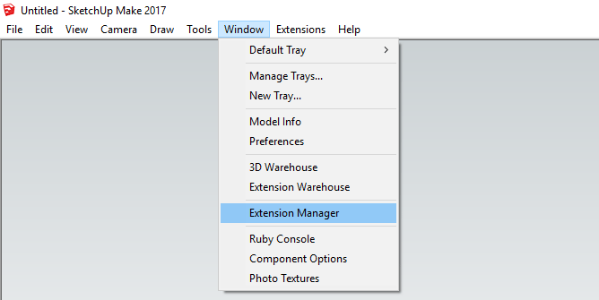

Requirements
- OS: Currently only works on Windows. A Mac version will be available at some stage.
- VR headsets: HTC Vive or Oculus Touch. Windows Mixed Realities headsets work, but they're not officially supported.
- Software: Only SketchUp 2017 and 2018 are currently supported. We are working on adding support for REVIT next.
Downloading and installing
You can either download and automatically install the VR Sketch plugin from inside SketchUp or manually download it from their website.
Download and installing from inside SketchUp.
- Open SketchUp
- In the top menu bar click "Window" then click "Extension Warehouse" from the drop-down list. This should open a new Extension Warehouse window. 
- In the search bar at the top, search for "vr sketch" or just "vr".

- From the search results select "
VR Sketch by
Maciej F.".

- Click the red "Download" button in the top right.

- If requested, sign in with your username and password, or follow their prompts to register first.
- Then click the red "Install" button in the top right.
- SketchUp will ask permission to install the extension. Select "Yes". (VR Sketch only requires access to your filesystem for (1) accessing SteamVR and the Vive; (2)writing some temporary files to improve performance)
- Wait for SketchUp to download and install the extension.
Downloading from the web and installing manually.
- You can download the SketchUp extension from the Extension Warehouse.
- Click the red "Download" button.

- If requested, sign in with your username and password.Then click the "Download" button again.
- Select where your download will be saved to.
- Open SketchUp.
- In the top menu bar click "Window" then click "Extension Manager" from the drop-down list. This should open a new Extension Warehouse window.
- Click the red "Install Extension" button in the bottom left.
- In the new window, navigate to where you downloaded the extension file (baroquesoftware_vrsketch_v1.0.0.rbz), then click "OK" (your version number might be different.
- SketchUp will ask permission to install the extension. Select "Yes". (VR Sketch only requires access to your filesystem for (1) accessing SteamVR and the Vive; (2)writing some temporary files to improve performance)
- Wait for SketchUp to download and install the extension.
Starting VR Sketch
- With SketchUp open, in the top menu bar, click "Extensions" then click "VR Sketch" and then click "Send to
VR". This will sends your currently-opened SketchUp model to the VR headset.

- If you have used VR Sketch before the icon tray may be visitable. You can also click on the first icon Send to VR and teleport tool to send your currently-opened SketchUp model to the VR headset.
Controls and input

HTC Vive
- Trigger - Used to do the action of the current tool. Is similar to clicking with a mouse.
- Touchpad - This is the menu button. Hold it in to choose which tool you want to use. The touchpad is also used to scroll.
- Grip buttons - Hold in these buttons to move and scale your model.
- Small top button - Play/stop in VR videos, when selected from SketchUp.
- Small bottom button - Is the Steam Home button and will load the Steam Home Page.
Oculus Rift
- Trigger - Used to do the action of the current tool. Is similar to clickin2g with a mouse.
- Thumbstick - Used only to scroll.
- Grip button - Hold in these buttons to move and scale your model.
- X or A buttons - This is the menu button. Hold it in to choose which tool you want to use.
- Y or B buttons - Play/stop in VR videos, when selected from SketchUp.
- Left menu button - Unassigned.
- Right Oculus button - Default action of loading the Oculus home page.
Tools
Choosing a tool
How to choose the tool you want to use with each controller.
- To choose a tool, hold in the menu button, a list of tools will appear in front of the controller, move the controller to the tool you would like to use. The tools icon will highlight when the controller is over it. Release the menu button while you are over the tool to select it. You will see the icon on the controller will change to the current tool of that controller.
- Each controller can have only one active tool.
- Each controller has the same list of tools available.
- You can have two different tools on each controller or the same tool on both controllers.
- With some tools, when you start use that tool the other controller can be used to help with that action.
- You cannot use two tools simultaneously (but you can use them in succession).
Navigation tools
Teleport tool
The tool for moving around your model at 1:1 scale.
- Pull in the trigger to aim where you would like to teleport to.
- Release the trigger to teleport to your selected position.
- If the pointer is blue you can teleport, if the pointer is pink you cannot teleport.
- When you teleport the scale is always changed to 1:1.
- While holding the
trigger in, you can scroll the
touchpad to set how the pointer works:
- Short arch
- Middle arch (default)
- Long arch
- Straight line
- When you are not inside the warehouse, there is a small warehouse icon; aim on it to teleport back to the original warehouse view.
- As a shortcut, teleport straight up (slightly to the back) will also return to the original warehouse view.
- The teleport preview arch will bounce off vertical or slanted surfaces.
- The teleport preview arch can pass through transparent surfaces. If the surface is half-transparent, the arch will pass through if it aims straight through it, but not if it reaches the surface from a shallow angle.
Zoom and Pan
Navigate around your model at any scale. This is not a standard tool; instead, it is always available, using the grip button.
- Zoom with both controllers. Press in the grip button on both controllers at the same time, then move the controllers towards each other to zoom in or away from each other to zoom out.
- Zoom with one controller. Hold in the grip button on a controller and then scroll on the touchpad to zoom in or out.
- Pan. Press in the grip button on one controller and move the controller. The model will move with the controller until you release the grip button.
- When zooming, red text will appear between the two controllers indicating what scale you are at. The scale will snap to certain common scales.
Selection tools
Select tool
The tool to select individual or multiple lines, faces or groups.
- Click select. Move the controller to the geometry you wish to select and pull the
trigger to select it. It that geometry is already selected it will deselect it.
- You can move the controller while the trigger is pressed to select or deselect more.
- If you pull the trigger twice quickly, like double clicking, you will select the geometry adjacent the object your controller is touching.
- If you pull the trigger three times quickly, you will select all the geometry touching the object your controller is touching.
- Box select. While your controller is not touching any geometry pull in the
trigger and drag the controller. This will create a selection box and will select anything that
is inside the box.
- If you drag from the top down your selection (in blue) will include only the geometry fully inside the box.
- If you drag from the bottom up your selection (in green) will include all the geometry that touches the box.
- The select tool gives you a preview of what will be selected by highlighting the geometry in blue.
- De-select everything. With the select tool active, click on nothing to de-select any current selections.
- De-select individual things. With the select tool active, click on any currently selected geometry to de-select it. There is pink preview highlighting what will be de-selected.
Group and Component tools
How to work with Group or Component.
Entering a Group or Component.
- With the Group or Component selected, press in the menu button and choose the Open Group tool (found above the select tool) to open it.
- Or, use the select tool to double click on any Group or Component to open it.
- When inside a Group or Component the rest of the model changes colour and cannot be edited.
- In the Configuration dialog box in SketchUp you can choose to hide the rest of the model or not.
Exiting a Group or Component.
- While inside a Group or Component, press in the menu button and choose the Exit Group tool (found above the select tool) to exit the current Group orComponent.
- Or, while inside a Group or Component, use the select tool and double click outside of the Group or Component to exit.
Creating Group or Component.
- Use the select tool to select the geometry you wish to group. Then press in the menu button and choose either the Create Group tool or the CreateComponent tool.
Converting groups into Components.
- Use the select tool to select the Group you wish to convert, then press in the menu button and choose Turn Group into Component tool.
Exploding Groups or Components
- Use the select tool to select the Group or Component, then press in the menu button and choose Explode tool to un-group the Group or Component.
Drawing tools
Erase tool
How to delete geometry.
- Move the controller over the object you wish to erase and pull the trigger.
- With the Erase tool active, as you move the controller a red highlight will indicate what will be deleted if you where to pull the trigger.
- To delete more than one object per click, use the select tool to select what you want to delete then use the Erase tool to delete that selection.
- Or, with the Erase tool active, hold the trigger pressed and move over several objects.
Line tool
How to draw a line between two points.
- Click one with the trigger to start drawing the line. Move the controller then click a second time to finish the line.
- It is also possible to start drawing the line by pulling in the trigger and holding it in and only releasing it when you want to finish the line.
- You can cancel drawing a line by pressing the menu button, which is highlighted red while drawing a line.
- After drawing a line, if the end point is not a pre-existing point, then it is automatically chosen as the start point of the next line. If you do not want to draw more lines, use cancel as described above.
Arch tool
How to draw an arch with 3 points of control.
- Drawing an arch is similar to drawing a line. Set the start point of the arch by clicking the trigger, move the controller to set the length and click a second time to mark the end point of the arch. Move the controller again to position the third point which the arch will pass through. Pull the trigger a third time to complete the arch.
- While drawing an arch (after setting the start point) you can choose the number of segments the arch will be divided into by scrolling up or down on the touchpad.
Freehand tool
The tool for freehand sketching.
- Either click the trigger once or hold it in to start drawing the line. Click a second time or just release the trigger to end the line.
- The first and last point follow the normal snapping rules, but the rest of the freehand line mostly does not snap to any axis, plane or object. The exception is that it snaps to faces that contain the first point.
Rectangle tool
The tool for drawing rectangles.
- Either click the trigger once or hold it in to start drawing the rectangle. Click a second time or just release the trigger to end the rectangle.
- While drawing a rectangle with one controller you can use the other to lock an axis or set a length manually. See the section on Setting lengths and Locking for more information.
Polygon tool
The tool for drawing polygons with any number of sides. Very similar to the circle tool.
- Either click the trigger once or hold it in to set the center point of the polygon. Move the controller away and click a second time or just release the trigger to set the radius and complete the polygon.
- While drawing a polygon (after setting the center point) you can choose the number of segments the polygon will have by scrolling up or down on the touchpad.
Circle tool
The tool for drawing circles. Very similar to the polygon tool.
- Either click the trigger once or hold it in to set the center point of the circle. Move the controller away and click a second time or just release the trigger to set the radius and complete the circle.
- While drawing a circle (after setting the center point) you can choose the number of segments the circle will have by scrolling up or down on the touchpad.
Editing tools
Push-Pull tool
The tool to extrude out perpendicular a face to create depth. Similar to the extrude tool.
- Move the controller until it is intersecting with a face. The face will highlight green to indicate which face will be affected. Either click once with the trigger on the face to start pulling it. Move the controller the desired distance and then either click a second time or release the trigger to finish.
Extrude tool
The tool to extrude out a face in any direction. Similar to the Push-Pull tool but not limited to only perpendicular.
- Move the controller until it is intersecting with a face. The face will highlight green to indicate which face will be affected. Either click once with the trigger on the face to start extruding it. Move the controller the desired distance and then either click a second time or release the trigger to finish.
- Unlike the Push-Pull tool, the extrude tool can extrude lines. Select some lines with the select tool, then change to the extrude tool and use it in the same way you would extrude a face, by clicking on the selected lines, moving the controller and clicking again to end the extrusion.
Offset tool
The tool to offset lines on a face.
- Offset a face. Move the controller until a the face you wish to offset is highlighted in green, then either click once with the trigger or hold it in. Move the controller to the desired position and either click a second time or release the trigger to complete the offset.
- Offset lines. Use the select tool to select the lines you wish to offset. Then use the Offset tool in the same way as you would when offsetting from a face.
Move tool
How to move and copy objects.
- Move. Move the controller over the thing you wish to move. It will highlight purple. Then either click once with the trigger or hold it in, move the controller to the desired position and then either click a second time or release the trigger to complete the move.
- If you want to move more that one thing at a time, use the select tool to select them first then use the move tool.
- Copy. To copy an item, start moving it and then scroll up on the touchpad to set the number of copies to 1. Now when you complete the move action it will create a copy instead of moving the first object.
- Copy multiple. To create multiple copies, start moving an item, and then scroll up on the touchpad to set the number of copies. The new multiple copies will be placed at the same interval as the initial move length.
- Distribute multiple copies. When coping an item if you scroll down on the touchpad to set the number of copies the copies will be distributed equally along the length of the move.
Rotate tool
The tool to rotate objects.
- Move the controller over the thing you wish to rotate. It will highlight purple. Click once with the trigger to set the point around which the object will rotate, move the controller away a little to create a leaver and click a second time. Now move the controller to set the rotation you wish and pull the trigger a third time to complete the rotation.
- Like the Move tool you can create one or multiple copies when rotating. While rotating, scroll up or down on the touchpad to set the number of copies you wish to make. It you scroll up the copies will be spaced at regular intervals based the the rotation you choose. If you scroll down the copies with be equally distributed along the rotation you choose.
Scale tool
The tool to scale objects.
- Move the controller to highlight the object you wish to scale. It with highlight green. Pull the trigger to bring up the scale axis handles (green cubes). Move the controller to a handle to select the axis you want to scale the object by. Pull the trigger a second time to start scaling the object. Pull the trigger a third time to finish the scale command.
- To change the scaling center, click on another handle with the other controller.
Other tools
Paint tool
The tool to choose and place colours and textures on the model.
- Choose a material. Hold in the menu button and move the controller over the paint bucket, then move the controller to the right to select a material from the pallet and release the menu button to choose that material.
- Placing a material. With a material selected aim the laser at the face you wish to paint and click with the trigger.
- Eye-drop a material. With the paint tool selected move the controller to touch the face with the material you want. You will see the tool icon will change to a bucket with a red arrow pointing into the bucket. Click with the trigger to make the material of the face become your currently selected material.
Materials
The tool where you can select, edit and create new materials.
- Enter the material menu. Hold in the menu button and move the controller over the materials icon and then release the button. This will display the materials menu.
- Select a material. While inside the materials menu, click on the vertical bar on the left tp access the full materials menu. Use the trigger to click on the material you want. Press the menu button to leave the materials menu.
- You can add a material to your pallet by first selecting a material and then clicking on the add icon below the pallet.
- Edit a material. You can edit the currently selected material with the controls on the right.
- In the colour bowl you can drag the control point by moving the controller over the point and holding in the trigger and moving the controller. You will see the preview cube update. Moving the point around the circle changes its hue while moving the point up and down adjusts its saturation.
- You can adjust the amount for red, blue, green and transparency of the material by using the trigger to drag the sliders left or right. You will see the preview cube update.
- To exit the material menu, press the menu button.
Component tool
The tool to place component inside your model.
- Select a component. Hold in the menu button and move the controller over the component icon and then release the button. This will display a list of all the components available. You can choose the one you want to insert by clicking on it with the trigger.
- There are two ways to scroll up and down the menu:
- While in the component selection menu hold in a grip button on either controller and move it to move the menu.
- While in the component selection menu scroll on the touchpad to scroll the menu.
- To exit the component selection menu, press the menu button.
History tool
The tool to undo or redo any action.
- To undo an action, hold down the menu button, move the controller over the red arrow icon representing each action previously done and then release the menu button.
- The lowest red action arrow icon is your last action, the higher up in the list the action is the older it is.
- To redo an action that you have just undone, hold down the menu button, move the controller over a green arrow icon and then release the menu button.
- The redo arrow icons only show if you have just used the Undo tool.
- The hights redo green arrow icon is the most current action, the lower in the list the action is the older it is.
Section cut tool
The tool to temporarily cut your model.
- Move the controller to the point at which you want to draw the section plain. Click with the trigger to set the position of the plain, then move the controller to choose the axis perpendicular to the section plain. Click a second time to set the orientation of the plain.
- To remove a section plain, hold in the menu button and choose the Delete section plain tool. This tool is only visible if you have already created a section plain.
- You can only create one section plain at a time.
Hide and Un-hide tool
The tool to control what you can an cannot see.
- To hide any geometry, first use the select tool to select what you want to hide, then hold down the menu button and move the controller over the Hide tool and release the menu button.
- To un-hide all your hidden geometry hold down the menu button and move the controller over the Un-Hide all tool and release the menu button.
Tool Extras
Canceling any action
How to end or stop doing an action.
- To end an action you don't want to do, press the menu button to cancel the current action.
Setting lengths
- When dragging out a length like when using the Line or Push/Pull tools the length snaps to logical increments depending on the current scale. If you are zoomed out the length might snap to the nearest meter. If you are zoomed in the length might snap to the nearest mm.
- Whenever the length measurement is visible it is possible to manually inputting a length by clicking on the numbers with the other controller. For example if you start drawing a line with your right controller, you can use the left controller to click on the measurement text. A small calculator window will appear where you can use the trigger to input any length you wish the line to be.
Snapping
- Axis snapping. Many actions like drawing a line or rectangle automatically snap to the x,y,z axis. The guidelines change colour (red, green and blue) to match the axis currently snapped to.
- Plane snapping. Many actions also snap to the x,y,z planes. This is indicated by a small coloured square the the controllers tip. The square changes colour to match the plane it is snapping to.
- Point snapping. Many actions snap to the nearest point, line, midpoint of a line or face.
- The distance at which snapping starts to happen can be set in the configurations menu.
Locking
- Locking an axis or plane. Many actions like drawing a line or rectangle can have their axis locked. This is done by using the controller not doing the action to click on the length indicator line or plane indicator guideline.
- When locking is available an icon of a lock will appear on the length indicator line.
- To unlock a locked axis or plane, pull the trigger of the controller not doing the main action.
Guidelines
- When drawing, guidelines and reference points(white spheres) will appear and mark what points the current action is snapping to.
- When drawing with one controller you can move the other controller over a point to create a reference point and guideline that the first controller can snap to.
VR Videos
Recording VR videos
- To start Recording, inside SketchUp, in top menu bar click Extensions, then click, VR Sketch then click Recorded a VR Video.... This will open a window in which you can set where the recording will be saved. As soon as this is set it will start recording.
- Press the small top button to stop your recording.
- Once you have finished your recording, you can press the small top button again to play back what you have just recorded.
Playing VR videos
- To play back a VR recording, inside SketchUp, in top menu bar click Extensions, then click, VR Sketch then click Play a VR Video.... This will open a window in where you can choose which recording to open. The recording will start as soon as it is loaded.
- Press the small top button to stop or replay the loaded video.
Room sharing
- To share the model you are working on, inside SketchUp, in top menu bar click Extensions, then click, VR Sketch then click Share room.... This will open a window in which you can set your name and the Room name.
- The room name must be at least 4 characters long.
- If someone enters the same room name they they will appear in the list of peers.
- You can then choose to send them the model for viewing only and editing by clicking on the buttons.
Settings in SketchUp
Icon tray
- Send to VR and teleport tool:
- If the model has not already been sent to VR then this button will send the model to VR.
- If the model is already in VR, click this button and then click anywhere in the model. This will teleport the person in VR to stand at the point you clicked. This is useful to move someone around your model.
- Copy VR location - Click this to align the SketchUp view point with the view of the VR headset. This is useful to see what the person in VR is looking at or working on.
- Configure VR view - This will open the configuration window for VR Sketch.
Menu
- Send to VR - This will send you currently opened SketchUp model to VR.
- Center view - This will align the SketchUp view point with the view of the VR headset
- Configuration - This will open the configuration window for VR Sketch.
- Custom Sky image - Use this to override the default sky background image.
- Shared Room - Use this to share your current model online, allowing multiple people to view or edit a SketchUp model together.
- Play a VR video - Use this to open and play a VR video.
- Record a VR video - Use this to record a VR video.
- Documentation - This will open the documentation website for help.
- License - This will open the license information. Here you can see your license status, expiry date and manage your subscription.
Configuration options
Enable actions in VR
- Teleporting (trigger) - Toggles whether or not you can use the Teleport tool in VR.
- Move/scale/rotate model ("grip" buttons on the side) - Toggles whether or not you can use the grip buttons to move, scale or rotate the model in VR.
- Editing (change tools with the touchpad) - Turn on or off the editing tools.
- Start toolbar on selected tool - Sets the tool you start with to be the select tool.
Rendering
- Hide edges - Toggles whether or not you can see edges.
- Hide rest of model when editing component - Toggles whether or not the rest of the model is hidden when you enter a Group or Component.
- Shadows follow SketchUp sun direction - Toggle whether or not the shadows match the SketchUp sun settings.
Alignment
-
This measure is in real-life mm. It changes how close to a point, axis or plane you must be before snapping occurs. It also changes the automatic rounding of distances. Default value: 35 mm.
-
Debugging: auto-reconnect to Unity server - With this active, if a bug occurs the program will automatically try reconnect the link between SketchUp and VR.
Bugs and errors
What should work and what does not
Changes to the SketchUp model should be immediately visible in the VR headset. If they are not (likely because of a bug), you need to reselect "Send to VR", which sends the whole model from scratch.
Most VR bugs should show up as a long piece of text on top of the VR mirror screen. When reporting such a bug, please give us a complete copy of this text (you can use copy-paste).
There is however one known situation in which a bug might cause a silent failure. After you complete an editing operation in VR (and provided you are not running the unlicensed version, in which case you just see "License needed" on the controllers): if you don't see the changes, try opening the Ruby console in SketchUp ("Window" menu) and repeat the procedure. If it is a bug in the Ruby side, it should be reported there.
In large models, it takes a few seconds before the in-VR teleport starts working (even after loading appears complete).
Most editing operations will cause pauses if your model is medium-large and doesn't use groups or components. This is because groups and components are currently the unit of transfer between the SketchUp and the Unity side.
We render the following elements in VR: faces (with or without texture); edges; and "Images". This excludes more advanced SketchUp constructs like construction lines, text labels, and so on. The "soft" edge option is supported, but not the "smooth" one: all edges appear sharp.
We could improve the way the teleport picks its destination in case the beam touches a wall or ceiling.
Textures may very occasionally appear badly positioned when you open a subgroup. (This issue cannot occur if you don't have any group or component opened for editing.) The cause is SketchUp's textures, which can be either "positioned" or "non-positioned" (right-click, Texture, "Reset Position" makes it non-positioned). However, non-positioned textures are reported at a bogus position by SketchUp's Ruby API when editing inside groups or components. We work around that by computing this bogus position on our own; then, if that is precisely what we get, we assume that it was a non-positioned texture that is misreported, and fix it manually. This might occasionally be foiled if it was actually a positioned texture that happened to be exactly at the same position.
Reporting problems
Please report any other bug to the issue tracker or by writing to the e-mail below.
License
Please contact us if you need more information about the license under which this software is distributed. This code contains LibTessDotNet (https://github.com/speps/LibTessDotNet), which is itself distributed under the SGI Free Software License B (Version 2.0).
Contact
We hope you enjoy it! Feel free to give us feedback by writing to fijal@baroquesoftware.com The Baroque Software team